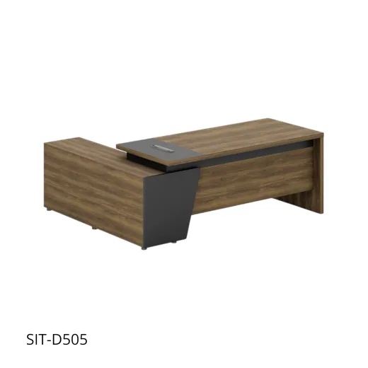
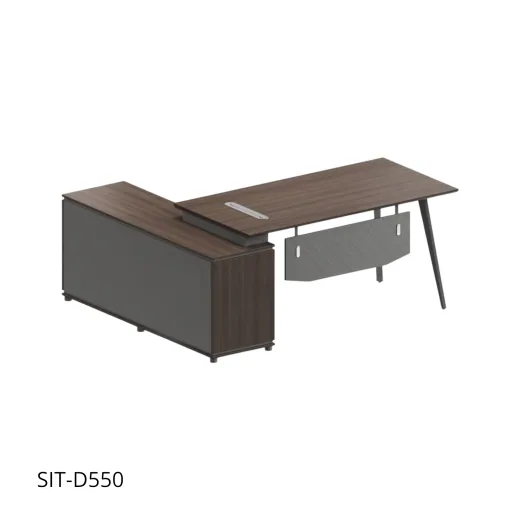
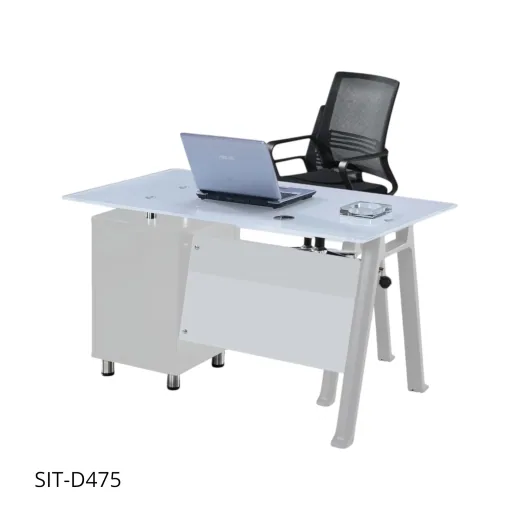
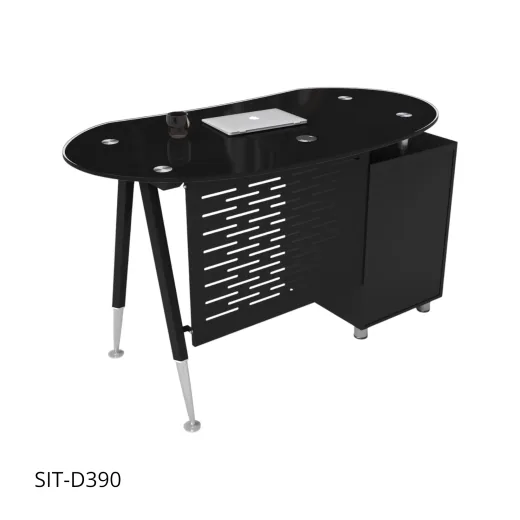

Oficina · Modelo SITD905
Escritorio de Oficina SIT, Tipo "L" Pasacable, Almacenamiento, 2 Gavetas con Llave, Color Madera Real + Gris. SIT-D905.
L 23,544
En iOffice
Precio en cada tienda
| Tienda | Precio | Antes | Disponibilidad | |
|---|---|---|---|---|
| iOffice | L 23,544 | — | Disponible | Ver en tienda › |
Precios referenciales tomados de cada tienda el 21 de noviembre de 2026. El precio válido es el que muestra la tienda al comprar.
Características
| Dimensiones | 240 cm (ancho) x 195 |
|---|
Descripción
El escritorio de Oficina con Extensión, combina practicidad y elegancia para tu espacio de trabajo. Con acabado en madera real y gris, ofrece un diseño moderno y profesional. Su amplio tamaño permite organizar cómodamente documentos, accesorios y equipo de oficina, manteniendo el área de trabajo ordenada y funcional.
Características
Extensión lateral para mayor espacio de trabajo, con gaveta y compartimiento con puerta con cerradura. Espacios abiertos tipo repisa.
Incluye tomacorrientes integrado por debajo del escritorio.
• Pasacables rectangular amplio.
Acabado en madera real y gris, elegante y moderno.
Estructura resistente y duradera para uso diario en oficina o home office.
Diseño funcional que permite mantener documentos, computadora y accesorios organizados.
Otros sillas y escritorios Oficina

Escritorio de Oficina SIT, Tipo "L", con Almacenamiento, 2 cajónes, Pasacalle, Color Nogal + Gris. SIT-D505L 14,973.14En iOffice Escritorio de Oficina SIT, Tipo L, Estantería, 3 Gavetas con Cerradura, Color Expresso + Gris Oscuro. SIT-D600 · SIT-D600G CafeL 12,859.3En iOffice
Escritorio de Oficina SIT, Tipo L, Estantería, 3 Gavetas con Cerradura, Color Expresso + Gris Oscuro. SIT-D600 · SIT-D600G CafeL 12,859.3En iOffice
Escritorio de Oficina SIT, Tipo "L", Almacenamiento, 2 cajones, Color Nogal Oscuro + Gris. SIT-D550.L 11,263.36En iOffice Escritorio de Oficina SIT, Tipo L, 2 puertas con Cerradura, Estantería, Color Madera + Gris Oscuro. SIT-D500L 10,902En iOffice
Escritorio de Oficina SIT, Tipo L, 2 puertas con Cerradura, Estantería, Color Madera + Gris Oscuro. SIT-D500L 10,902En iOffice Escritorio de Oficina SIT Tipo "L", base cuadrada, 3 cajones+3 almacenamientos. Color Blanco + Azul Navy. SIT-D358L 6,974.75En iOffice
Escritorio de Oficina SIT Tipo "L", base cuadrada, 3 cajones+3 almacenamientos. Color Blanco + Azul Navy. SIT-D358L 6,974.75En iOffice
Escritorio de Oficina SIT con 3 Cajones con Cerradura, Panel de Vidrio Color Blanco y Metálico. SIT-D475L 5,502.75En iOffice
Escritorio de Oficina SIT, Base Ovalada, Vidrio Templado, 3 cajones, Color Blanco y Color Negro. SIT-D390 NegroL 5,486.16En iOffice Escritorio de Oficina SIT con base Metálica de 3 cajones, tapa de Madera y base Metálica. SIT-D400L 5,402.57En iOffice
Escritorio de Oficina SIT con base Metálica de 3 cajones, tapa de Madera y base Metálica. SIT-D400L 5,402.57En iOffice